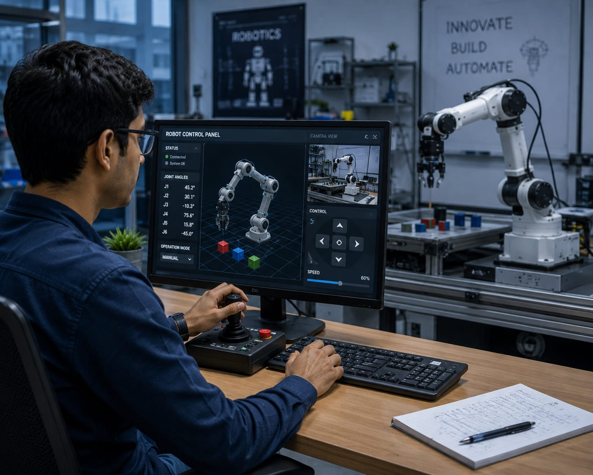

- Imagine a robot working in a factory.
- Robots can do many tasks automatically.
- To do these tasks, software is programmed inside the robot.
- The software tells the robot what to do and how to do it.
- The person who builds this software is called a Robotics Software Engineer.
- 👉 In simple words: Robotics Software Engineers build the software that helps robots move, think, and work automatically.
Robotics Software Engineer
🧑🎨 What Do They Do?

🎓 How to Become a Robotics Software Engineer
These beginner-level courses help students learn programming, electronics, robotics fundamentals, automation, and computer systems.
Diploma in Computer Science Engineering (CSE)
Duration: 3 Years
Eligibility: Class 10 Pass
Entrance Exam: Polytechnic Entrance Exam / Merit-Based Admission
Diploma in Automation and Robotics
Duration: 3 Years
Eligibility: Class 10 Pass
Entrance Exam: Polytechnic Entrance Exam / Merit-Based Admission
Diploma in Electronics and Communication Engineering (ECE)
Duration: 3 Years
Eligibility: Class 10 Pass
Entrance Exam: Polytechnic Entrance Exam / Merit-Based Admission
📝 Exam Details
(Click on the exam name to see full details)
Polytechnic Entrance Exam Merit-Based AdmissionNote: After completing a diploma, most students continue through B.Tech Lateral Entry or gain advanced skills in programming, robotics, ROS, Linux, AI, and automation before becoming Robotics Software Engineers.
These undergraduate courses help students learn robotics, programming, artificial intelligence, automation, embedded systems, and software development.
B.Tech in Robotics and Artificial Intelligence (AI)
Duration: 4 Years
Eligibility: 10+2 Pass (with Physics, Chemistry, and Mathematics)
Entrance Exam: JEE Main / JEE Advanced / State Engineering Entrance Exams
B.Tech in Computer Science and Engineering (CSE)
Duration: 4 Years
Eligibility: 10+2 Pass (with Physics, Chemistry, and Mathematics)
Entrance Exam: JEE Main / JEE Advanced / State Engineering Entrance Exams
B.Tech in Electronics and Communication Engineering (ECE)
Duration: 4 Years
Eligibility: 10+2 Pass (with Physics, Chemistry, and Mathematics)
Entrance Exam: JEE Main / JEE Advanced / State Engineering Entrance Exams
Bachelor of Computer Applications (BCA)
Duration: 3 Years
Eligibility: 10+2 Pass (Any Stream; Mathematics or Computer Science Preferred)
Entrance Exam: CUET-UG / State-level CET / University Merit-Based Admission
B.Sc in Computer Science (with AI & Robotics Electives)
Duration: 3 Years
Eligibility: 10+2 Pass (Science Stream with Mathematics)
Entrance Exam: CUET-UG / State-level CET / University Merit-Based Admission
📝 Exam Details
(Click on the exam name to see full details)
JEE Main JEE Advanced State Engineering Entrance Exams CUET-UG State-level CET Merit-Based AdmissionNote: B.Tech is the most direct route to becoming a Robotics Software Engineer.
Students from BCA and B.Sc backgrounds can also enter this field by developing strong programming skills and gaining experience in robotics, AI, ROS, Linux, and software development projects.
These pathways help diploma holders continue their education and develop advanced skills in robotics, programming, artificial intelligence, and automation.
B.Tech Lateral Entry (Computer Science / Robotics Engineering)
Duration: 3 Years
Eligibility: Diploma in Engineering (CSE, IT, ECE, Robotics, or Related Fields)
Entrance Exam: State Lateral Entry Exams (e.g., JELET, ECET, LET)
BCA Lateral Entry
Duration: 2 Years
Eligibility: Diploma in CSE, IT, or Computer Applications
Entrance Exam: Merit-Based Admission / University Entrance Exam
📝 Exam Details
(Click on the exam name to see full details)
State Lateral Entry Exams Merit-Based Admission University Entrance ExamNote: Diploma holders usually enter Robotics Software Engineering through B.Tech Lateral Entry.
Along with academics, students should build strong skills in programming, Linux, ROS, robotics simulation, AI, and software development projects.
These postgraduate and advanced specialization programs help students gain expertise in robotics software, artificial intelligence, autonomous systems, machine learning, and intelligent automation.
M.Tech in Robotics / Intelligent Systems & AI
Duration: 2 Years
Eligibility: Graduate (B.Tech / B.E. in CSE, ECE, Mechatronics, Robotics, or Related Engineering Branch)
Entrance Exam: GATE / State-level PG Engineering Entrance Exams
Master of Computer Applications (MCA)
Duration: 2 Years
Eligibility: Graduate (BCA, B.Sc Computer Science, or Any Degree with Mathematics)
Entrance Exam: NIMCET / State-level MCA Entrance Exams / University Entrance Exams
Post Graduate Program in Autonomous Systems & Robotics Software
Duration: 6 – 11 Months
Eligibility: Graduate (B.Tech / MCA / M.Sc Computer Science or Related Fields)
Entrance Exam: Direct Admission / Merit-Based Admission / Technical Interview
📝 Exam Details
(Click on the exam name to see full details)
GATE NIMCET State PG Engineering Entrance Exams State MCA Entrance Exams University Entrance Exams Merit-Based AdmissionNote: Most Robotics Software Engineers start their careers after a bachelor's degree.
Postgraduate programs are useful for specializing in robotics, artificial intelligence, autonomous systems, computer vision, and advanced software development roles.
Note:
(Age limits, marks, and admission process may vary depending on the college or state. These courses are available in many colleges and universities across India. You can choose colleges based on your location, budget, and entrance exams.)
🏛️ Top Colleges for Robotics Software Engineer
(Tap on a college to view the details)
After 10th Pass (Diplomas)
Government Polytechnic Mumbai, Mumbai Government Polytechnic, Pune Lovely Professional University (LPU), Phagwara Sardar Vallabhbhai Patel Polytechnic, Mumbai Chhotu Ram Polytechnic, RohtakAfter 12th Pass (Bachelor's Degrees)
Amrita Vishwa Vidyapeetham, Coimbatore SRM Institute of Science and Technology, Chennai Nirma University, Ahmedabad Sathyabama Institute of Science and Technology, Chennai Chandigarh University, MohaliAfter Diploma (Lateral Entry)
Delhi Technological University (DTU), New Delhi Anna University, Chennai Jadavpur University, Kolkata PSG College of Technology, Coimbatore Thapar Institute of Engineering and Technology, PatialaAfter Graduation (Master's Degrees & Advanced Robotics)
Indian Institute of Technology (IIT) Madras, Chennai Indian Institute of Technology (IIT) Kharagpur, Kharagpur Indian Institute of Technology (IIT) Guwahati, Guwahati Motilal Nehru National Institute of Technology (MNNIT), Prayagraj Defense Institute of Advanced Technology (DIAT), PuneSTEP 1
Imagine you are working as a Robotics Software Engineer at a robotics company.
STEP 2
Your team is building a robot that can perform tasks automatically.
STEP 3
You write software that tells the robot how to move and perform its work.
STEP 4
You test the robot to make sure it follows the instructions correctly.
STEP 5
If the robot makes mistakes, you find the problem and improve the software.
STEP 6
You may also help robots use sensors, cameras, and AI to work more intelligently.
STEP 7
If you enjoy programming, robotics, and solving technical problems, this career may suit you.
Where do Robotics Software Engineers work? (Job Roles + Growth)
These are some roles you can explore in Robotics Software Engineering.
You usually start with beginner roles and grow with experience.
🟢 Beginner Roles
🤖
Junior Robotics Software Engineer
(After Short-Term Certification / Diploma)
Writes basic software to control robot movements and simple tasks.
📋
Robotics Software Analyst Trainee
(After Diploma / BCA / B.Tech)
Assists senior engineers with robot testing and simulation tasks.
🔵 Mid-Level Roles
⚙️
Robotics Software Engineer
(After BCA / B.Tech + ROS Certification)
Develops software that helps robots perform tasks automatically.
🖥️
Robotics Software Administrator
(After BCA / B.Tech + Experience)
Manages robot software systems, updates, and testing environments.
🟣 Advanced Roles
🧠
Principal AI Robotics Architect
(After MCA / M.Tech + Advanced Robotics Experience)
Designs intelligent robotics systems powered by AI and automation.
🌍
Head of Robotics Software Operations
(After Senior Leadership Experience)
Leads engineering teams building advanced robotic products.
🤖
Robotics Companies
Develop software that helps industrial and service robots perform tasks automatically.
🏭
Manufacturing & Automation Companies
Build and improve robotic systems used in factories and production lines.
🚗
Automotive & Autonomous Vehicle Companies
Create software for self-driving vehicles, smart navigation, and robotic automation.
🏥
Healthcare & Medical Robotics
Develop software for surgical robots and medical automation systems.
🚀
Space, Defense & Research Organizations
Build robotic systems for exploration, defense, and advanced research.
🌍
Remote Robotics Software Jobs
Develop, test, and maintain robotics software for global companies.
(Click Yes or No for each question)
1. Have you ever seen a robot in a factory, hospital, warehouse, or in videos online?
2. Have you ever wondered how a robot functions?
3. Do you know that every robot needs software to tell it how to move and perform tasks?
4. Are you interested in learning about robotics technology?
5. Imagine you create software that controls a robot's movements, helps it understand its surroundings, and allows it to perform tasks automatically. Your work helps robots operate in factories, hospitals, warehouses, and many other places. Does this excite you?